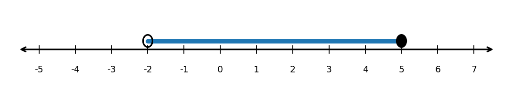

Practice Set 1.3.2
Determine the domain of $h(x)=\sqrt{x+2}$.
Use the number line to write the set in interval notation.

Determine the domain and range of the graphed function. Use interval notation.

A student says the domain of $f(x)=\sqrt{x-4}$ is all real numbers because any number can be substituted for $x$. Explain the error and give the correct domain.
Which equation has exactly one real solution?
\(x^2-10x+25=0\)
\(x^2-10x+21=0\)
\(x^2-10x+30=0\)
\(x^2+10x+21=0\)
Explain how you know.
Which equation has no real solutions?
\(x^2+6x+9=0\)
\(x^2+6x+5=0\)
\(x^2+6x+10=0\)
\(x^2-6x+5=0\)
Explain how you know.
For each expression, state what number must be added to complete the square.
\(x^2+10x\)
\(x^2-14x\)
\(x^2+3x\)
\(x^2-\frac{2}{3}x\)
Which expression is equivalent to:
\[x^2-6x+9\]
\((x-3)^2\)
\((x+3)^2\)
\((x-6)^2\)
\((x-9)^2\)
Solve by completing the square.
\[x^2+8x+7=0\]
Solve using the quadratic formula.
\[2x^2-5x-3=0\]
A student calculates the discriminant for:
\[2x^2-3x+8=0\]
as:
\[\Delta=(-3)^2-4(2)(8)=9-64=-55\]
“Since the discriminant is negative, there are no solutions.”
What should the student have said instead? Explain carefully.
A company models profit by:
\[P(x)=-2x^2+24x-50\]
where \(x\) is the number of items sold in hundreds and \(P(x)\) is profit in thousands of dollars.
Complete the square to rewrite the function in vertex form.
Interpret the vertex in context.
Use the discriminant to determine whether the company has break-even points.
Find the break-even points exactly.
Explain what interval of \(x\)-values gives positive profit.
Evaluate each expression without a calculator.
\(\sqrt{100}\)
\(\sqrt[3]{-27}\)
\(\sqrt[5]{32}\)
\(\sqrt[4]{16}\)
Determine whether each expression is real.
\(\sqrt{-9}\)
\(\sqrt[3]{-8}\)
\(\sqrt[4]{-16}\)
\(\sqrt[5]{-32}\)
Simplify by first simplifying each radical, then combining like radicals.
\(\sqrt{20}+\sqrt{45}\)
\(\sqrt{18}+\sqrt{50}\)
\(3\sqrt{12}-\sqrt{75}\)
\(2\sqrt{27}+5\sqrt{48}\)
A student simplifies:
\[\sqrt{72}=\sqrt{36+36}=6+6=12.\]
Explain the error and simplify correctly.